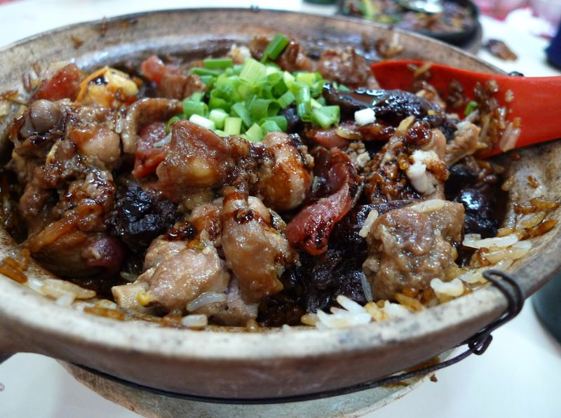
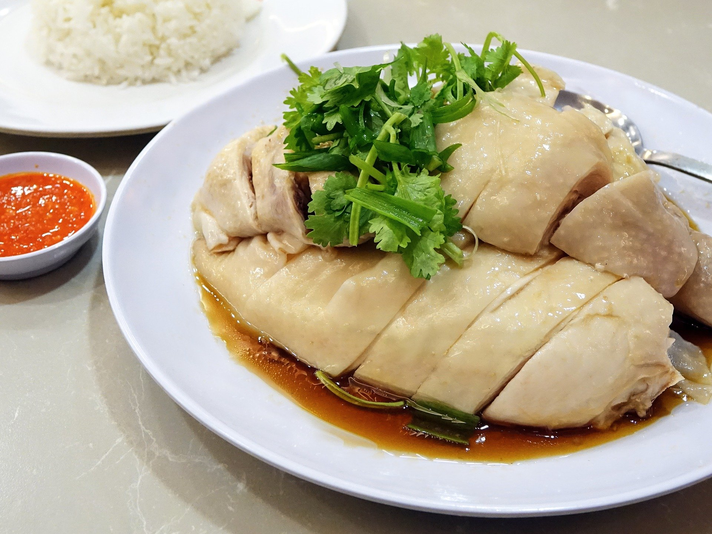
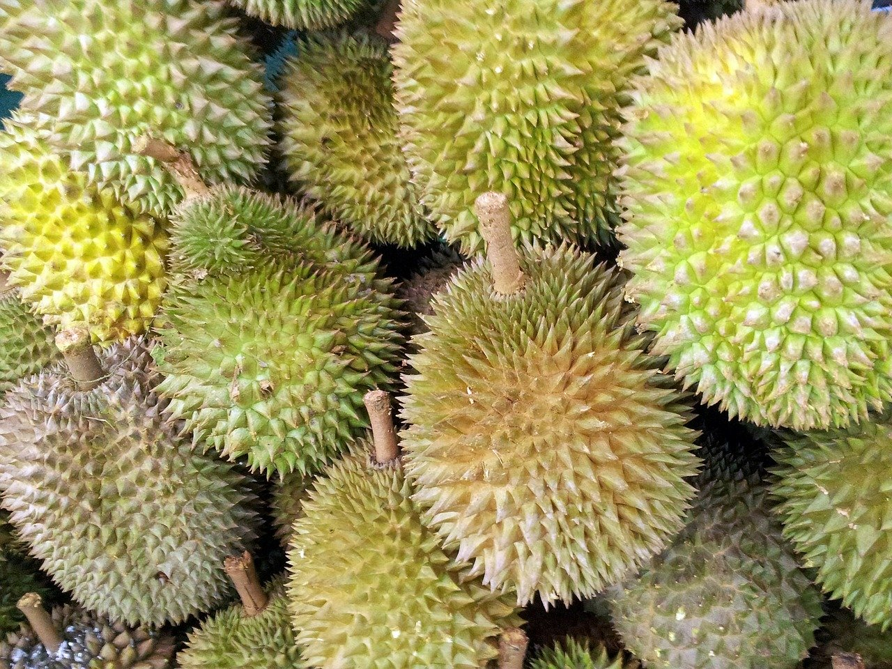
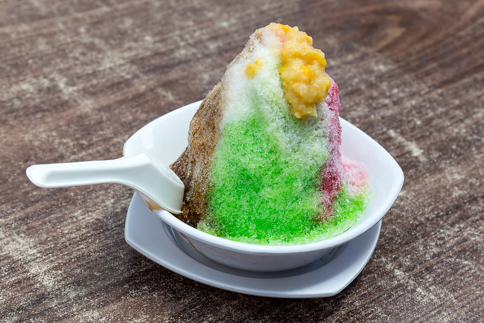

| 
| Claypot Rice |
Claypot rice involves the cooking of presoaked rice over a charcoal stove, giving the dish a delicous char flavour. It is further served with thick, sweetened soy sauce and dried salted fish. |
8/10 |
| 
| Chicken Rice |
Hainanese chicken rice is a dish of poached chicken and seasoned rice, served with chilli sauce and usually with cucumber garnishes. It was created by immigrants from Hainan in southern China and adapted from the Hainanese dish Wenchang chicken. It is considered one of the national dishes of Singapore and is most commonly associated with Singaporean cuisine but is also seen throughout Southeast Asia, particularly Indonesia and Malaysia where it is a culinary staple. |
8/10 |
| 
| Durian |
The durian is a fruit that has over hundreds of different named varities. Names as the "King of fruits", the durian is distinctive for its large size, strong odour and thorny exterior. Depending on its region, ripeness and other factors, durians can be sour, bitter or creamy and sweet. Personally, I love the creamy sweet kind, and I believe that most foreigners that dislike durian are put off by its strong odour, and chose the bitter/sour kind that most people do not like. |
9/10 |
| 
| Ice Kacang |
Ice Kacang directly translates to "Bean Ice". Although not common in western culture, beans are widely used in many deserts in Singapore. Ice Kacang is shaved ice, topped with different coloured syrups that has a base filled with different kind of sweet toppings like jelly and red bean. |
10/10 |